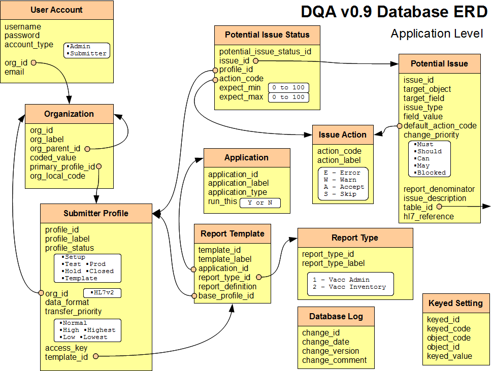
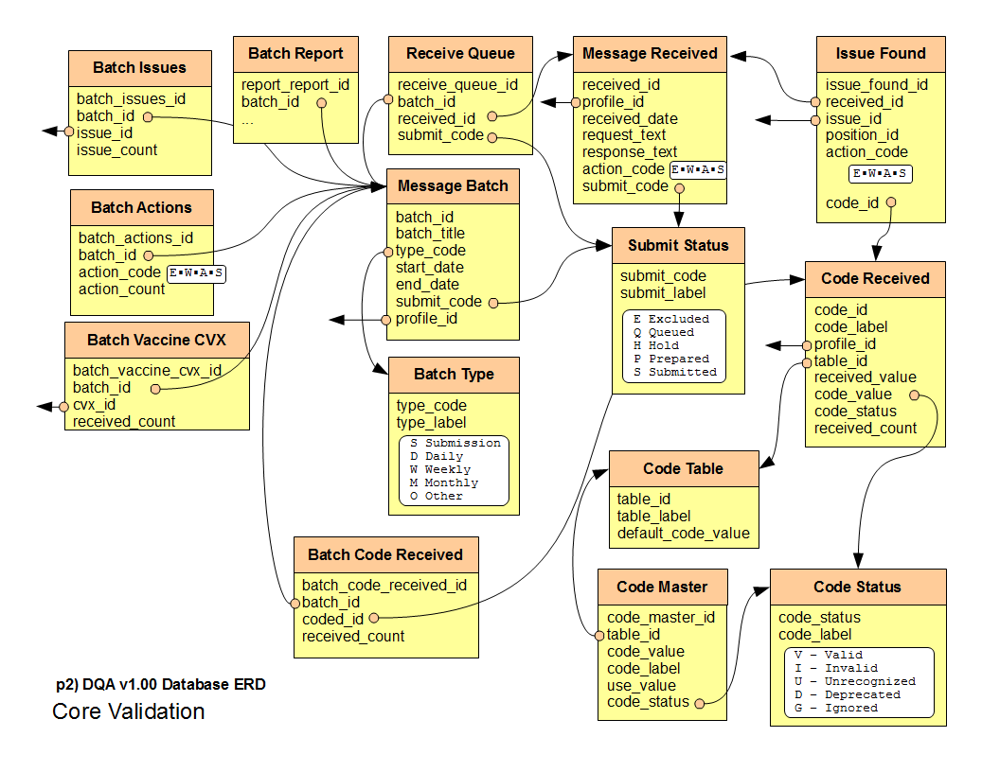

User Manual
Database
In DQA v1.00 most of the DQA functionality is hidden unseen in the database structure. A thorough understanding of the DQA database design will allow a user to make full use of the functionality. In later versions the DQA will expose the data and control available in the database design.
How to read the following diagrams:
- Each table name beings with DQA_ and is followed by the name separated by underscores. The DQA diagram shows the tables names in an easier to read format. The table titled "User Account" represents the database table DQA_USER_ACCOUNT.
- The arrows point from a database foreign key to a table that it references.
- Most arrows terminate on the table, but others are separated on different pages. These arrows point to the left or right indicating that the object referred to lies on a different page.
- The columns are listed below in their logical order.
- Columns with defined discrete values have them listed in white insets. This is for simplicity in reading the diagram.
Application Level - ERD Page 1
User Account
Contains a list of users that can access the DQA. Currently only used to authorize the admin user who can access the configuration user interface.
- username The username that identifies the DQA user.
- password The password (currently in plain text) that can be used to authenticate the DQA user.
- account_type The type of user this account represents. Valid values 'Admin' or 'Submitter'.
- org_id The organization that this user is associated with.
- email The email address of the user.
Organization
Represents a single reporting entity. The DQA was not built to model every organizational structure that exists, but rather a simple hierarchy that applies for submitting entities. As of version 1.00 this is not depended on for specific logic.
- org_id Unique database id.
- org_label Short, human readable description.
- org_parent_id Reference to organization this belongs to. The base organization is the immunization registry and this organization refers to itself. This field is required.
- coded_value This field is no longer used, as it has been replaced by org_local_code. It will be removed in future DQA versions.
- primary_profile_id The profile that this organization is associated to by default. The DQA supports assigning more than one profile to a single submitting organization but normally an organization will have one profile.
- org_local_code The external id for this organization. This would normally be an id assigned by the IIS.
Submitter Profile
A submitting organization sends data and it is classified under a profile. The profile contains settings, characteristics, status, and reports associated with this imported data. Normally an submitting organization would only have one profile, but others would be defined if the organization sends data from more than one system or one account is dedicated for testing.
- profile_id Unique database id. When submitting realtime this is indicated using FACILITY_ID field.
- 1..100 Reserved for MASTER submitter profiles. Master profiles are templates that are recognized by DQA.
- 101..250 Reserved for TEST submitter profiles, used by DQA centrally for software quality testing.
- 251..1199 Reserved for pre-defined templates defined by DQA centrally.
- 1200.. Open for all profiles defined by local DQA instance.
- profile_code Unique code for profile assigned by the IIS. This is an external value and is an alternate key for this profile.
- profile_label Short, human readable description.
- profile_status Indicates how this profile should be handled.
- Setup Profile has been created but not configured, currently not used by DQA. Will be used when UI is in place and user has begun process to define the profile but has not yet finished.
- Test Profile has been configured and is ready to receive messages, but the data has not been approved to move towards production.
- Prod Profile is approved by IIS to go to production. Data received will be sent to the IIS.
- Hold Profile has been temporarily stopped so data does not move into production.
- Closed Profile is no longer active, can not receive data, and does not participate in reporting activities.
- Template Profile is not used for regular submissions, but rather serves as a template for new submission profiles.
- org_id Organization this submission profile is assigned under.
- data_format The format of the data being accepted. In version 1.00 the DQA only supported HL7 version 2 messages.
- HL7v2 Health Level Seven version 2.x messages.
- transfer_priority Indicates the level of quality and status for processing. Higher priority messages may be processed sooner.
Can be used to prioritize export batches.
- Normal
- High
- Highest
- Low
- Lowest
- access_key Auto generated code that is the "password" for this profile and should be sent in the PASSWORD field on the real time interface.
- template_id References report template that should be used when generating DQA reports for this profile.
Potential Issue Status
Indicates the specific status for a given profile and potential issue. This table allows for setting the error/warning/accept/skip status for a specific issue for a specific profile. When creating a new profile the DQA populates this table based on the defaults defined by the base profile associated with the report template. In version 1.00 there is no UI to change potential issue status, but changing it in the database will affect the specific profile.
- potential_issue_status_id Unique database id.
- issue_id References potential issue.
- profile_id References submitter profile.
- action_code Indicates the type of action that the DQA should take when an issue is encountered.
- expect_min Indicates the minimum percentage that this issue is expected to occur. Value is an integer valued from 0 to 100. The DQA does not currently act on this value.
- expect_max Indicates the maximum percentage that this issue is expected to occur. Value is an integer valued from 0 to 100. The DQA does not currently act on this value.
Application
Represents different installed versions of the DQA. While only one application can run at a time, this allows for dynamically reconfiguring DQA to run as any available application.
- application_id Unique database id.
- application_label Short, human readable description.
- application_type A modifier of the application label to indicate a specific use for this application, such as Test or Prod.
- run_this Indicates whether this is the currently selected application.
- Y Only one record should be marked as Yes.
- N All other records should be marked as No.
- primary_template_id Indicates the report template that should be used by default by the DQA. This is used in situations where the DQA automatically creates a submitter profile, such as when reading FTP folders. In future versions of the DQA, the user will select the template from a list of available templates when creating a new profile.
Report Template
Represents the settings for a DQA report that may be run on a submitting profile. For version 1.00 most applications will run only one type of DQA report for all import profiles. In the future, when many different kinds of interfaces are developed, DQA reports may be created to represent the characteristics expected for particular sets of interfaces. (For example, the DQA report template for a birthing hospital may be different than one for a family practice.)
- template_id Unique database id.
- template_label Short, human readable description.
- report_type_id Indicates which broad cross-application category this report belongs to.
- report_definition An XML document that describes the structure and weights of the DQA report.
- base_profile_id
Issue Action
Represents the type of actions that can be taken for a given issue.
- action_code Unique code for action
- E Error issue indicates that the message should be rejected. Message will be rejected if at least one error issue is identified.
- W Warning issue indicates that there is a condition in the message that should be reviewed as a possible problem. Warnings do not cuase messages to be rejected.
- A Accept issue indicates that the issue is expected and acceptable, they are not highlighted or mentioned.
- S Skip issue indicates that the issue should remove a message, or part of a message from processing. For example, if the patient is over the age accepted by the IIS, a skip could be used to not process over-aged patients and their vaccinations and still not generate an error. A skip may also be used at the vaccination level to indicate that a specific vaccination should not be processed. For example, a known non-immunization even could be quietly skipped using this action.
- action_label Short, human readable description
Potential Issue
Represents the total set of possible issues that the DQA is sensitive to. In version 1.00 not all issues have been implemented. The most important and crucial issues are implemented, the other were not because (1) implementation requires a large amount of effort or (2) the issue is a low priority issue. Eventually all issues will be implemented as improvements are made.
- issue_id Unique id.
- target_object The base object that the issue is associated with. For example: Patient, Vaccination
- target_field The field within the base object. For example: Name First, Admin Code
- issue_type The type of issue given a certain field. For example: is missing, is invalid, is valued as
- field_value The value of the field, used for certain specific value checks. For example: A, D
- default_action_code The default action to take. The use of this field has effectively been replaced by the action_code indicated in the potential_issue_satus field.
- change_priority Indicates the level of importance for the user to change this issue. Some issues can not be adjusted by the
user, for example if an HL7 message is missing the PID segment, where the patient id and demographics are, the DQA has to indicate an error as
it can not be processed. These issues can not be adjusted. Others are often adjusted, for example some sites may be required to always send
VFC information and others not. Other issues are rarely adjusted. This status indicates the likely hood that an issue will need to be
addressed so that the UI can put the most important configuration issues on top.
- Must This issue needs to be adjusted during the profile creation process to ensure that the issue is set correctly.
- Should This issue should be adjusted during the profile creation process, or later when reviewed.
- Can This issue may be changed, but normally would not be reviewed.
- May This issue may be changed, but would not be normally displayed in the normal process of editing a profile.
- Blocked This issue may never be changed.
- report_denominator The virtual object that this issue is triggered for. Some issues are triggered for every message/patient, others are triggered for every vaccination or every administered vaccination. This value allows the DQA report to give a realistic percentage for this issue.
- issue_description The human readable description for this issue. Not currently well populated. The display text for the issue is always the concatenation of target_object, target_field, issue_type, and field_value (with the appropriate spaces between). This display text is both controlled and human readable. This is why this field has not been used much yet. In the future this field will probably be filled in with more detail.
Report Type
Represents the general category for this report. This is so reports from different applications can be grouped in similar categories. These categories are expected to grow as the DQA is used to test different kinds of data sources.
- report_type_id Unique id.
- report_type_label Human readable description.
Report Vaccine Group
Represents a vaccine group that may appear on the DQA report. In version 1.0 this is not used, but in the future this will be used to indicate for this template what vaccinations are expected to be administered. This will allow for creating a list of vaccinations that are expected to be seen from a particular submitter. At this point the DQA report XML defines the vaccine groups globally as DQA users are currently not making profile-by-profile changes.
- report_vaccine_group_id Unique database generated id.
- group_id References vaccine group.
- profile_id References associated profile.
- group_status Indicates how a vaccination in this group should be classified.
- Expected The vaccination is expected to show up at once in a given batch, every time. For example: DTap
- Recommended The vaccination should show up at once in a given batch, but may not always be present.
- Optional The vaccination is sometimes given, but may or may not be submitted. For example: Zoster
- Not Expected The vaccination is specifically not expected to be sent. For example: Anthrax
Keyed Setting
Represents a specific setting tied to a key and an object. This is used for cascading settings. If no value is set then the application will pick a default.
- keyed_id Unique database assigned id.
- keyed_code Unique that identifies the specific setting. This is unique for given object_code and object_id.
- object_code The type of object this setting is associated with. The base object is 'Application'.
- object_id The id of the object. For an 'Application' object_code the id is the application_id.
- keyed_value The value that this setting has.
Core Validation - ERD Page 2
Batch Issues
- batch_issues_id
- batch_id
- issue_id
- issue_count
Batch Actions
- batch_actions_id
- batch_id
- action_code
- action_count
Batch Vaccine CVX
- batch_vaccine_cvx_id
- batch_id
- cvx_id
- received_count
Batch Report
- batch_report_id
- batch_id
Receive Queue
- receive_queue_id
- batch_id
- received_id
- submit_code
Message Batch
- batch_id
- batch_title
- type_code
- start_date
- end_date
- submit_code
- profile_id
Batch Type
- type_code
- S Submission
- D Daily
- W Weekly
- M Monthly
- O Other
- type_label
Batch Code Received
- batch_code_received_id
- batch_id
- coded_id
- received_amount
Message Received
- received_id
- profile_id
- received_date
- request_text
- response_text
- action_code
- submit_code
Submit Status
- submit_code
- submit_label
Code Table
- table_id
- table_label
- default_code_value
Code Master
- code_master
- table_id
- code_value
- code_label
- use_value
- code_status
Issue Found
- issue_found_id
- received_id
- issue_id
- position_id
- action_code
- coded_id
Code Received
- coded_id
- code_label
- profile_id
- table_id
- received_value
- code_value
- code_status
- received_count
Code Status
- code_status
- V Valid
- I Invalid
- U Unrecognized
- D Deprecated
- G Ignored
- code_label